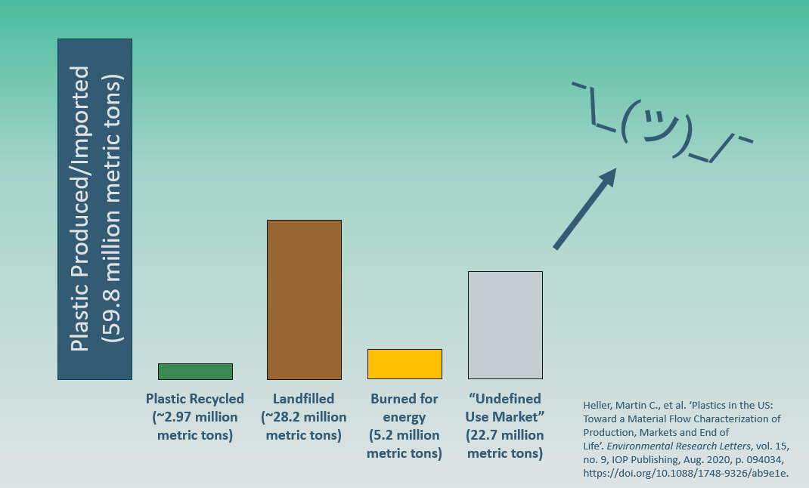

Short answer: it is not getting recycled. ~95% of the time, our plastic ends up incinerated, in landfills, or leaked into our environment (including our bodies!).

Longer answer: Plastic is a very unique branch of materials. There are hundreds of thousands of different types of plastic, each with their own chemical makeup and properties.
In addition, plastic also often contains all sorts of dyes, stabilizers, and other additives to make it better suited for its intended use. This is a
fantastic feature when
it comes to fitting the needs of your product.
However, this variability is plastics' greatest curse.
When it comes to recycling, all of these countless types of plastic become extremely difficult to properly sort and process.
For example, the current recycling identification system in the United States recognizes only 7 different types of plastic:
#1 - PET (Polyethylene Terephthalate) - most often used in water bottles,
#2 - HDPE (High-Density Polyethylene) - milk jugs, detergent bottles,
#3 - PVC (Polyvinyl Chloride) - pipes, credit cards,
#4 - LDPE (Low-Density Polyethylene) - plastic bags, six-pack rings, flexible container lids,
#5 - PP (Polypropylene) - yogurt containers, straws, bottle caps,
#6 - PS (Polystyrene) - disposable coffee cups, plastic food boxes, plastic cutlery,
AND, finally,
#7 - "Other" plastics.
What classifies a plastic as being a #7 category? Basically, every one of the other hundreds of thousands of plastic configurations in existence that is
NOT one of the first six plastic types!
When there are so many different configurations of plastic and so few ways to distinguish them, this becomes a massive logistics problem. Let's walk through a hypothetical scenario:
Imagine all of these different types of plastic we know and use as household liquids. Usually, we just use the product on its own, in the way we purchased it;
we don't often mix any of the liquids together, unless we know that they will make a good duo (coffee and creamer, for example). Otherwise, we can end up mixing two items that CAN NEVER or SHOULD NEVER be mixed
at all (oil and water, milk and coke, bleach and ammonia... to name a few!). Now, to make matters things all the more confusing, all of the liquids we have in the house
are all in
glass jars with no labels on them, except for a handful that get used fairly often (#1 is water, #2 is soap, #3 is orange juice, etc.).
Apart from the few liquids with numbers on them, you have no foolproof way to know what is in each jar. We can use some of our senses
and tools to figure it out (if something smells like vinegar, it probably is vinegar), but there is no tried and true method that works
for discerning what each jar contains. What do we do in this mess?
Sadly, this scenario reflects the current state of plastic recycling. Other than finding the number inside the triangle on the plastic
container, there really is no easy or accurate way to know what type of plastic you have.
Plus, we haven't even discussed
the idea that different additives can make recycling plastic of the SAME NUMBER hard to achieve!
"Now, surely if we put our plastic
in the recyclables container, there must be some way for the landfill or recycling facility to sort it all out, right?"
Not entirely... From the minute the plastic enters the magic recycling bin, there are all sorts of ways the process can go wrong.
First: Pickup. Many cities and communities have recycling pickup services, but you may be shocked to learn
that a large portion of these services do not take them to a recycling facility. Instead, the plastic gets sent
straight to the landfill, where it will sit for hundreds (or thousands!) of years. Why does this happen? Often,
the number of nearby facilities that can actually process plastic is very limited. In North Central Iowa, the nearest
residential Material Recovery Facility (MRF) is in Lakeville, MN - nearly 2 hours away!
Okay, let's assume your plastic gets sent to a MRF. What happens then?
TO BE CONTINUED...